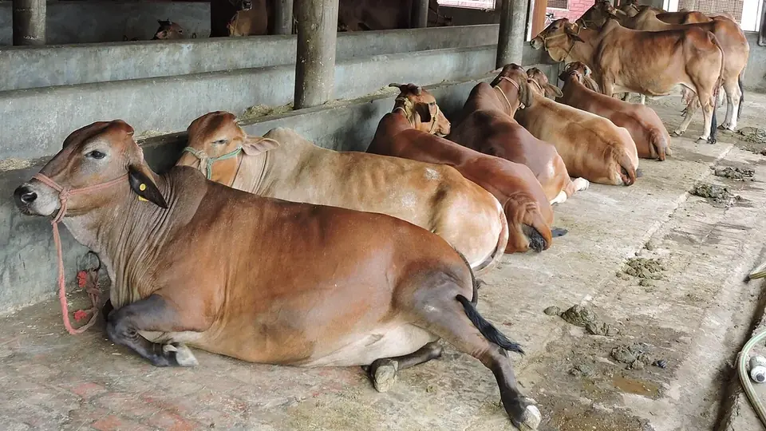

खेती का पैसा साल में दो बार आता है, दूध का हर दस दिन में। पर डेयरी में घाटा दूध कम होने से नहीं होता — कुल खर्च का 65–70% अकेला दाना-चारा खा जाता है।
✍️ Kunal Rajput — KrashiMitra⏱️ 11 मिनट पढ़ें📅 अगस्त 2026

लुधियाना (पंजाब) की एक डेयरी इकाई में साहीवाल नस्ल की गायें — सूखा, ढाल वाला फर्श और खुली हवा डेयरी की पहली ज़रूरत हैं।
हर दस दिन में पैसा — बशर्ते दाने का हिसाब सही हो
🌾
65–70%
कुल खर्च में दाना-चारा का हिस्सा
🥛
1 किलो दाना
हर 2.5 लीटर दूध पर (गाय)
🗓️
13–14 महीने
ब्यांत का सही अंतराल
📖
भूमिका
खेती का पैसा साल में दो बार आता है, दूध का पैसा हर दस दिन में। यही एक बात डेयरी को छोटे किसान की सबसे भरोसेमंद आमदनी बनाती है — बाढ़ आए या सूखा, ब्याई हुई भैंस रोज़ सुबह-शाम पैसा देती रहती है। भारत दुनिया का सबसे बड़ा दूध उत्पादक देश है और यहाँ हर साल लगभग 24 करोड़ टन दूध पैदा होता है, जिसका बड़ा हिस्सा एक-दो पशु रखने वाले छोटे किसानों से ही आता है।
फिर भी बहुत से डेयरी फार्म घाटे में चलते हैं, और वजह वह नहीं होती जो लोग समझते हैं। घाटा दूध कम होने से नहीं, प्रति लीटर खर्च ज़्यादा होने से होता है — कुल खर्च का 65 से 70 प्रतिशत अकेले दाना-चारा खा जाता है। जो किसान हरा चारा ख़ुद उगाता है और दाना दूध के हिसाब से देता है, वही कमाता है। यह लेख उसी गणित से शुरू होकर नस्ल, आवास, प्रजनन, टीकाकरण और सरकारी मदद तक जाता है।
विज्ञापन
🐄
गाय या भैंस — कौन सी पालें?
यह पहला और सबसे बड़ा फ़ैसला है, और इसका जवाब आपके इलाके की डेयरी पर निर्भर करता है — कि वह दूध का दाम फैट के हिसाब से देती है या सीधे प्रति लीटर।
बात
गाय (देसी व संकर)
भैंस
दूध की मात्रा
ज़्यादा
अपेक्षाकृत कम
दूध में फैट
लगभग 3.5–4.5%
लगभग 6–7.5%
फैट के भाव पर कमाई
कम
ज़्यादा
दाने का खर्च
कम
ज़्यादा
गर्मी सहने की ताकत
देसी नस्लें बहुत अच्छी
कमज़ोर — पानी व छाया ज़रूरी
गर्मी (हीट) की पहचान
आसान — साफ़ लक्षण
मुश्किल, ख़ासकर गर्मियों में
ब्याने का अंतराल
छोटा
लंबा
बछड़े/कटड़े की क़ीमत
बहुत कम
बेहतर
💡
पहली बार शुरू कर रहे हैं तो 2 से 4 पशुओं से शुरू करें, और दोनों एक साथ ब्याने वाले न लें। दो पशु अलग-अलग महीनों में ब्याएँ तो साल भर दूध चलता रहता है। बीस पशुओं का फार्म एक साथ खड़ा करने की कोशिश ही सबसे आम गलती है — चारा, मज़दूर और बीमारी, तीनों एक साथ संभालना नए किसान के बस का नहीं होता।
🧬
नस्ल का चुनाव — अपने इलाके की नस्ल सबसे अच्छी
नीचे दी गई मात्रा एक ब्यांत (लगभग 305 दिन) की है और अच्छी देखभाल पर आधारित है। यही पशु ख़राब चारे और गर्मी में इससे आधा दूध भी दे सकता है — यानी नस्ल सिर्फ़ आधी कहानी है, बाकी आधी देखभाल है।
नस्ल
प्रकार
एक ब्यांत में दूध (लगभग)
ख़ासियत
साहीवाल
देसी गाय
2,000–3,000 लीटर
गर्मी व बीमारी सहने में बेहतरीन
गिर
देसी गाय
1,600–2,500 लीटर
दूध में A2, कम देखभाल में भी टिकाऊ
राठी
देसी गाय
1,500–2,500 लीटर
सूखे इलाकों के लिए बढ़िया
थारपारकर
देसी गाय
1,400–2,500 लीटर
कम चारे में भी चल जाती है
HF संकर
संकर गाय
3,000–4,000 लीटर
सबसे ज़्यादा दूध, पर फैट कम व गर्मी में कमज़ोर
जर्सी संकर
संकर गाय
2,500–3,500 लीटर
HF से छोटी, गर्मी थोड़ी बेहतर सहती है
मुर्रा
भैंस
1,800–2,500 लीटर
भारत की सबसे लोकप्रिय दुधारू भैंस, फैट ~7%
मेहसाणा
भैंस
1,600–2,000 लीटर
गुजरात-राजस्थान में मज़बूत
जाफराबादी
भैंस
1,800–2,500 लीटर
भारी शरीर, ज़्यादा चारा माँगती है
नीली-रावी
भैंस
1,800–2,200 लीटर
पंजाब-हरियाणा की मज़बूत नस्ल
⚠️
ज़्यादा दूध देने वाली संकर नस्ल हर जगह सही जवाब नहीं है। HF और जर्सी संकर गायें 30–32°C से ऊपर तनाव में आ जाती हैं, उनका दूध गिरता है और बीमारी जल्दी लगती है। अगर आपके यहाँ पंखे-फुहारे, हरा चारा और पशु चिकित्सक — तीनों का पक्का इंतज़ाम नहीं है, तो साहीवाल, गिर, राठी जैसी देसी नस्ल या स्थानीय भैंस ज़्यादा मुनाफ़ा देगी।
🔍
पशु ख़रीदते समय क्या देखें
डेयरी में सबसे बड़ा नुकसान ग़लत पशु ख़रीदने से होता है, और वह नुकसान अगले तीन साल तक चलता है। ख़रीदने से पहले यह जाँच ज़रूर करें:
जाँच
✅ अच्छा पशु
❌ बचें
ब्यांत
दूसरी या तीसरी ब्यांत
पाँचवीं से ऊपर
ब्याने का समय
15–30 दिन पहले ब्याई हुई
ब्याए 4 महीने से ज़्यादा
अयन (थन)
बड़ा, मुलायम, दूध निकालने के बाद सिकुड़ जाए
कड़ा, गाँठ वाला, टेढ़े थन
दूध की जाँच
अपने सामने, लगातार 2 दिन, दोनों समय दुहवाकर देखें
बेचने वाले के बताए आँकड़े पर भरोसा
शरीर
चौड़ा पेट, चमकदार खाल, चौकस आँखें
दुबला, खुरदरी खाल, नाक बहती हुई
चाल
सीधी, बिना लंगड़ाहट
लंगड़ाना, खुर में घाव
रिकॉर्ड
टीके व ब्याने का ब्योरा उपलब्ध
कोई रिकॉर्ड नहीं
🥛
दूध ख़ुद दुहकर देखें, और दो दिन देखें। बेचने से पहले पशु को ज़्यादा दाना खिलाकर या दुहने का समय बदलकर दूध बढ़ा हुआ दिखाना आम बात है। दो दिन, चारों समय की मात्रा जोड़ लें — असली आँकड़ा वही है। हो सके तो पशु चिकित्सक को साथ ले जाएँ; उनकी फ़ीस से कई गुना बचत होती है।
विज्ञापन
🏠
बाड़ा — महंगा नहीं, सूखा चाहिए
डेयरी में पक्का शेड ज़रूरी नहीं है, सूखा फर्श और छाया ज़रूरी है। शुरुआत में पूरी पूँजी शेड में लगा देना और पशु व चारे के लिए पैसा न बचना बहुत आम गलती है।
जगह: हर पशु के लिए लगभग 40 वर्ग फुट ढका हुआ और 80–100 वर्ग फुट खुला हिस्सा। भीड़ से थनैला और खुर की बीमारी बढ़ती है।
दिशा: शेड की लंबाई पूरब-पश्चिम रखें, ताकि दिन भर सीधी धूप अंदर न आए।
फर्श: हल्की ढाल वाला, खुरदरा फर्श ताकि पेशाब बहकर निकल जाए और पशु फिसले नहीं। चिकना फर्श गिरने और थन कटने की सबसे बड़ी वजह है।
हवा: दोनों तरफ़ खुला, ताकि हवा आर-पार निकले। बंद कमरे में अमोनिया भरता है।
पानी: साफ़ पानी हर समय सामने रहे। एक दुधारू पशु दिन में 60 से 100 लीटर तक पानी पीता है, और मोटे तौर पर हर लीटर दूध के लिए 3 लीटर पानी चाहिए।
गर्मी में: पंखा, छत पर पुआल या सफ़ेद रंग, और दोपहर में फुहारा — यह खर्च नहीं, दूध बचाने का निवेश है।
🌾
दाना-चारा का गणित — यहीं मुनाफ़ा बनता या बिगड़ता है
डेयरी का पूरा हिसाब इसी सेक्शन में है। खिलाने का नियम सीधा है — पहले शरीर की देखभाल के लिए, फिर दूध के हिसाब से:
क्या
कितना (रोज़, प्रति पशु)
क्यों
हरा चारा
25–30 किलो
सबसे सस्ता पोषण; दूध और सेहत दोनों इसी से
सूखा चारा (भूसा/कड़बी)
5–6 किलो
पेट भरने और जुगाली के लिए ज़रूरी
दाना — देखभाल के लिए
1.5–2 किलो
शरीर बनाए रखने की बुनियादी ज़रूरत
दाना — दूध के लिए (गाय)
हर 2.5 लीटर दूध पर 1 किलो
दूध जितना ज़्यादा, दाना उतना ज़्यादा
दाना — दूध के लिए (भैंस)
हर 2 लीटर दूध पर 1 किलो
भैंस के दूध में फैट ज़्यादा, ऊर्जा भी ज़्यादा लगती है
खनिज मिश्रण
लगभग 50 ग्राम
गर्मी में आना, गाभिन होना और थनैला — तीनों इसी से जुड़े
नमक
30–50 ग्राम
पानी पीना और पाचन ठीक रखता है
पानी
60–100 लीटर
दूध का लगभग 87% हिस्सा पानी ही है
🧮
उदाहरण: 10 लीटर दूध देने वाली गाय को रोज़ लगभग 2 किलो (देखभाल) + 4 किलो (10 ÷ 2.5) = 6 किलो दाना चाहिए, साथ में 25–30 किलो हरा चारा और 5 किलो सूखा चारा। सबको एक जैसा दाना खिलाना — कम दूध वाली को भी 6 किलो — सीधा घाटा है, और ज़्यादा दूध वाली को कम देना उससे भी बड़ा।
⚠️
ऊपर दी मात्राएँ आम मार्गदर्शन हैं। पशु का वज़न, नस्ल, ब्यांत की अवस्था और चारे की गुणवत्ता — इन सबसे असली ज़रूरत बदलती है। अपने पशु के लिए सही राशन नज़दीकी पशु चिकित्सा अधिकारी, KVK या दुग्ध सहकारी समिति से तय करवाएँ।
🌿
हरा चारा साल भर — सबसे सस्ता मुनाफ़ा
बाज़ार से दाना ख़रीदने से पहले यह करें। आधा एकड़ ज़मीन में उगाया हरा चारा दो पशुओं का साल भर का दाना-खर्च आधा कर सकता है, और दूध की मात्रा भी बढ़ाता है।
नेपियर (हाथी घास): एक बार लगाकर 3–4 साल तक कटाई; सबसे ज़्यादा हरा चारा देने वाली फसल। पहली कटाई के बाद हर 40–45 दिन में कटती है।
बरसीम: सर्दी का सबसे अच्छा चारा (अक्टूबर–नवंबर बुवाई), प्रोटीन भरपूर, 5–6 कटाई तक।
ज्वार व मक्का: गर्मी और बरसात के लिए तेज़ बढ़ने वाला चारा।
लोबिया व रिजका: दलहनी चारा — प्रोटीन बढ़ाता है और ज़मीन को नाइट्रोजन देता है।
साइलेज बनाएँ: बरसात या हरे चारे की बहार में बचा हुआ चारा काटकर, हवा बंद गड्ढे या बैग में दबाकर रखें। यही सूखे महीनों में हरे चारे की जगह लेता है।
⚠️
छोटी ज्वार व मक्का सूखे के बाद ज़हरीली हो सकती है। सूखा पड़ने या पाला पड़ने के बाद इनमें हाइड्रोसायनिक अम्ल बन जाता है। ऐसे खेत का चारा घुटने भर ऊँचा होने से पहले या सूखे के तुरंत बाद न काटें — कुछ दिन रुकें, या पहले सुखाकर खिलाएँ।
💰
दूध का भाव — लीटर से नहीं, फैट से बनता है
यह वह बात है जो नए डेयरी किसान को सबसे देर से समझ आती है। ज़्यादातर दुग्ध सहकारी समितियाँ और निजी डेयरियाँ दूध का दाम फैट और SNF (सॉलिड्स नॉट फैट) के हिसाब से देती हैं, प्रति लीटर नहीं। यानी 10 लीटर पतला दूध, 8 लीटर गाढ़े दूध से कम पैसा दे सकता है।
फैट बढ़ाने वाली बातें: सूखा चारा और हरा चारा दोनों संतुलित मात्रा में, पर्याप्त जुगाली, और दुहने से पहले पशु का शांत रहना।
फैट घटाने वाली बातें: बहुत ज़्यादा दाना और बहुत कम सूखा चारा, गर्मी का तनाव, और अधूरा दुहना।
आख़िरी धार सबसे कीमती है: दूध की आख़िरी धारों में फैट सबसे ज़्यादा होता है। अयन पूरा ख़ाली न करना फैट भी घटाता है और अगली बार दूध भी।
दुहने का समय पक्का रखें: रोज़ एक ही समय, 12 घंटे के अंतर पर। समय बदलने से मात्रा और फैट दोनों गिरते हैं।
पानी मिलाना सबसे महंगी बेईमानी है: जाँच मशीन पकड़ लेती है, दाम गिरता है, और भरोसा एक बार टूटे तो वापस नहीं आता।
🥇
अपनी समिति का भाव-पत्रक (रेट चार्ट) माँगकर देखें। ज़्यादातर जगह दाम "प्रति किलो फैट" या फैट व SNF के दो-आधार फार्मूले से तय होता है। एक बार यह चार्ट समझ लेने के बाद पता चलता है कि 0.3% फैट बढ़ाना कई बार आधा लीटर दूध बढ़ाने से ज़्यादा फ़ायदेमंद है।
🐮
प्रजनन — बिना बछड़े के दूध नहीं
डेयरी का सबसे चुपचाप होने वाला नुकसान यही है: पशु समय पर गाभिन नहीं हुआ, और ब्यांत का अंतराल 12–14 महीने की जगह 20 महीने हो गया। हर बढ़ा हुआ महीना सीधे ख़ाली खर्च है।
गर्मी (हीट) का चक्र: लगभग हर 21 दिन में आता है और 12–18 घंटे रहता है। भैंस में लक्षण हल्के होते हैं, इसलिए सुबह-शाम ध्यान से देखें — ख़ासकर रात और तड़के।
गर्मी के लक्षण: बार-बार रँभाना, बेचैनी, दूसरे पशुओं पर चढ़ना या चढ़ने देना, पारदर्शी लार जैसा स्राव, दूध में हल्की गिरावट।
कृत्रिम गर्भाधान (AI) का सही समय: गर्मी दिखने के 12 से 18 घंटे बाद। सुबह गर्मी दिखे तो उसी दिन शाम को, शाम को दिखे तो अगली सुबह।
गाभिन की जाँच: गर्भाधान के 60–90 दिन बाद पशु चिकित्सक से जाँच करवाएँ। इंतज़ार करते रहना महीने बर्बाद करता है।
गाभिन काल: गाय में लगभग 280–285 दिन, भैंस में 305–315 दिन।
शुष्क काल (ड्राई पीरियड): ब्याने से 60 दिन पहले दूध निकालना बंद कर दें। यह "नुकसान" नहीं है — इसी से अगली ब्यांत का दूध और बछड़े की सेहत तय होती है।
लक्ष्य: ब्याने के 60–90 दिन के अंदर दोबारा गाभिन, ताकि ब्यांत का अंतराल 13–14 महीने रहे।
💉
टीकाकरण और बीमारी से बचाव
रोग
कब
किसे
खुरपका-मुँहपका (FMD)
हर 6 महीने पर
सभी गाय-भैंस — राष्ट्रीय कार्यक्रम में अक्सर मुफ़्त
गलघोंटू (HS)
मानसून से पहले
सभी, ख़ासकर भैंस
लंगड़ा बुखार (BQ)
मानसून से पहले
6 माह से 2 साल के पशु
ब्रूसेलोसिस
4–8 महीने की उम्र पर, जीवन में एक बार
सिर्फ़ मादा बछड़ी
लंपी स्किन रोग
विभाग के निर्देश अनुसार
गाय व भैंस
कृमिनाशक (पेट के कीड़े)
हर 3–6 महीने
सभी — बछड़ों में सबसे ज़रूरी
थनैला (मैस्टाइटिस) डेयरी की सबसे महंगी बीमारी है, क्योंकि यह चुपचाप दूध घटाती है और थन हमेशा के लिए ख़राब कर सकती है। रोकथाम आसान और लगभग मुफ़्त है:
दुहने से पहले-बाद हाथ और थन साफ़: साफ़ पानी और अलग कपड़ा हर पशु के लिए।
अयन पूरा ख़ाली करें: बचा हुआ दूध ही संक्रमण की जड़ है।
दुहने के बाद 30 मिनट तक पशु को बैठने न दें: थन का मुँह खुला रहता है — दाना सामने रख दें ताकि वह खड़ा रहकर खाए।
टेढ़े-मेढ़े दूध की जाँच: पहली धार अलग बर्तन या काली प्लेट पर निकालें; फटा-फटा या गुठली वाला दूध दिखे तो तुरंत पशु चिकित्सक को दिखाएँ।
बीमार पशु सबसे आख़िर में दुहें: वरना दुहने वाले के हाथ पूरे बाड़े में संक्रमण फैला देते हैं।
⚠️
टीकों का कार्यक्रम राज्य और इलाके के हिसाब से बदलता है, और कई टीके सरकारी अभियानों में मुफ़्त लगते हैं। अपने ब्लॉक के पशु चिकित्सा अधिकारी से अपने पशुओं का कार्यक्रम लिखवाकर लें। दवा देने के बाद दूध कितने दिन नहीं बेचना है (विदड्रॉल पीरियड), यह भी उन्हीं से पूछें — यह नियम तोड़ना पूरे गाँव के दूध की जाँच फ़ेल करा सकता है।
🏛️
सरकारी मदद — कहाँ से पैसा मिल सकता है
पशुपालन के लिए किसान क्रेडिट कार्ड (KCC): दुधारू पशु रखने वाले किसान को दाना, चारा और दवा जैसी रोज़मर्रा की ज़रूरत के लिए कम ब्याज पर कार्यशील पूँजी मिलती है। बिना गारंटी वाली सीमा और ब्याज छूट के नियम समय-समय पर बदलते हैं।
राष्ट्रीय पशुधन मिशन (NLM): पशुधन व चारा उद्यमिता के लिए पात्र आवेदकों को पूँजी अनुदान।
राष्ट्रीय गोकुल मिशन: देसी नस्लों के सुधार, कृत्रिम गर्भाधान और नस्ल सुधार से जुड़ा कार्यक्रम।
पशुपालन अवसंरचना विकास निधि (AHIDF): दुग्ध प्रसंस्करण, चारा संयंत्र जैसी बड़ी इकाइयों के लिए ब्याज में छूट के साथ ऋण।
दुग्ध सहकारी समिति से जुड़ना: कई बार सबसे बड़ा फ़ायदा यही है — पक्का ख़रीदार, नियमित भुगतान, दाने पर छूट और पशु चिकित्सा सेवा एक साथ।
⚠️
अनुदान की दर, पात्रता और आवेदन की प्रक्रिया राज्य और वर्ष के साथ बदलती रहती है, और कई राज्यों की अपनी अलग योजनाएँ भी हैं। पैसा लगाने या ऋण लेने से पहले अपने ज़िला पशुपालन विभाग या बैंक शाखा से मौजूदा नियम पक्के कर लें। KrashiMitra कोई एजेंट नहीं है और न ही ऋण या अनुदान दिलवाता है।
🚫
ये गलतियाँ कभी न करें
बीस पशुओं से शुरुआत — 2–4 से शुरू करें और कमाई से बढ़ाएँ। बड़े कर्ज़ पर खड़ा किया गया फार्म पहली बीमारी में गिर जाता है।
सबको एक जैसा दाना — दाना दूध के हिसाब से बँटना चाहिए, बराबर नहीं।
हरा चारा न उगाना — बाज़ार से सब कुछ ख़रीदकर डेयरी शायद ही कभी मुनाफ़े में आती है।
ब्याने से पहले दूध निकालते रहना — 60 दिन का शुष्क काल न देना अगली ब्यांत का दूध स्थायी रूप से घटा देता है।
गर्मी पर ध्यान न देना — एक चूकी हुई हीट यानी 21 दिन का सीधा नुकसान।
अधूरा दुहना — दूध भी घटता है, फैट भी, और थनैला का ख़तरा बढ़ता है।
खनिज मिश्रण न देना — बार-बार गर्मी में न आना और बार-बार गाभिन न होना अक्सर यहीं से शुरू होता है।
रिकॉर्ड न रखना — दूध, दाना, ब्याने और टीके की तारीख़ें एक कॉपी में लिखें। जो नापा नहीं जाता, वह सुधरता भी नहीं।
गोबर को कचरा समझना — गोबर की खाद, गोबर गैस और वर्मी कम्पोस्ट डेयरी की दूसरी कमाई हैं।
🗓️
रोज़, हफ़्ते और साल का काम
समय
ज़रूरी काम
हर रोज़
तय समय पर दुहना, दूध व दाना लिखना, साफ़ पानी, नाली की सफ़ाई, गर्मी के लक्षण देखना
हर हफ़्ते
बाड़े की धुलाई, चारा काटने की मशीन व बर्तनों की सफ़ाई, खुर की जाँच
हर महीने
वज़न व शरीर की स्थिति देखना, दाने का हिसाब दूध के हिसाब से दोबारा तय करना
हर 3–6 महीने
कृमिनाशक; FMD का टीका हर 6 महीने
मानसून से पहले
गलघोंटू व लंगड़ा बुखार का टीका, छत व नाली की मरम्मत, चारे का भंडारण
अक्टूबर–नवंबर
बरसीम की बुवाई — सर्दी भर हरा चारा
गर्मी से पहले
छाया, पंखा-फुहारा, पानी के अतिरिक्त बर्तन; साइलेज तैयार रखें
ब्याने से 60 दिन पहले
दूध निकालना बंद, गाभिन पशु को अतिरिक्त दाना व खनिज
✅
निष्कर्ष
तीन बातें याद रखें। पहली — छोटी शुरुआत करें, 2 से 4 पशुओं से, और अलग-अलग महीनों में ब्याने वाले लें ताकि दूध साल भर चलता रहे। दूसरी — हरा चारा ख़ुद उगाएँ और दाना दूध के हिसाब से दें, क्योंकि कुल खर्च का 65–70% यहीं जाता है और मुनाफ़ा भी यहीं बनता है। तीसरी — ब्यांत का अंतराल 13–14 महीने रखें; एक चूकी हुई हीट और अधूरा शुष्क काल पूरे साल की कमाई खा जाते हैं।
और सबसे सस्ता औज़ार वह कॉपी है जिसमें आप रोज़ का दूध, दाना, टीका और ब्याने की तारीख़ लिखते हैं।
डेयरी में कमाई भैंस से नहीं, हिसाब से आती है।
विज्ञापन
❓
अक्सर पूछे जाने वाले सवाल
1डेयरी फार्म शुरू करने के लिए कितने पशु से शुरुआत करें?
पहली बार शुरू करने वाले को 2 से 4 पशुओं से ही शुरुआत करनी चाहिए, और ऐसे पशु लेने चाहिए जो अलग-अलग महीनों में ब्याएँ, ताकि साल भर दूध और आमदनी चलती रहे। कमाई से धीरे-धीरे संख्या बढ़ाएँ — बड़े कर्ज़ पर एक साथ 15–20 पशु खड़े करना डेयरी में घाटे का सबसे तेज़ रास्ता है।
2गाय पालें या भैंस — किसमें ज़्यादा फ़ायदा है?
अगर आपकी डेयरी फैट के हिसाब से दाम देती है तो भैंस ज़्यादा फ़ायदेमंद है, क्योंकि उसके दूध में लगभग 6–7.5% फैट होता है जबकि गाय के दूध में 3.5–4.5%। पर गाय ज़्यादा दूध देती है, कम दाना खाती है, उसकी गर्मी पहचानना आसान है और वह जल्दी दोबारा ब्याती है। फ़ैसला अपनी समिति के भाव-पत्रक और अपने इलाके की गर्मी देखकर करें।
3एक दुधारू पशु को रोज़ कितना दाना देना चाहिए?
नियम यह है — शरीर की देखभाल के लिए 1.5–2 किलो दाना, और उसके ऊपर गाय को हर 2.5 लीटर दूध पर 1 किलो तथा भैंस को हर 2 लीटर दूध पर 1 किलो। यानी 10 लीटर दूध देने वाली गाय को लगभग 6 किलो दाना चाहिए, साथ में 25–30 किलो हरा चारा, 5–6 किलो सूखा चारा और लगभग 50 ग्राम खनिज मिश्रण।
4दूध में फैट कैसे बढ़ाएँ?
फैट बढ़ाने का सबसे भरोसेमंद तरीका है सूखा चारा पर्याप्त देना और अयन को हर बार पूरा ख़ाली करना, क्योंकि आख़िरी धारों में फैट सबसे ज़्यादा होता है। सिर्फ़ दाना बढ़ाकर और सूखा चारा घटाकर फैट उल्टा गिरता है। दुहने का समय रोज़ एक ही रखें, पशु को दुहने से पहले शांत रखें और गर्मी के तनाव से बचाएँ।
5गाय-भैंस को कृत्रिम गर्भाधान कब कराना चाहिए?
कृत्रिम गर्भाधान का सही समय गर्मी के लक्षण दिखने के 12 से 18 घंटे बाद है — सुबह गर्मी दिखे तो उसी दिन शाम को, और शाम को दिखे तो अगली सुबह। गर्मी का चक्र लगभग हर 21 दिन में आता है। गर्भाधान के 60–90 दिन बाद पशु चिकित्सक से गाभिन होने की जाँच ज़रूर करवाएँ।
6ब्याने से कितने दिन पहले दूध निकालना बंद कर देना चाहिए?
ब्याने से कम से कम 60 दिन पहले दूध निकालना पूरी तरह बंद कर देना चाहिए — इसे शुष्क काल कहते हैं। इन दो महीनों में अयन के ऊतक दोबारा तैयार होते हैं, बछड़े का ज़्यादातर विकास होता है और अगली ब्यांत का दूध तय होता है। शुष्क काल न देना अगली ब्यांत में दूध स्थायी रूप से घटा देता है।
7गाय-भैंस को कौन-कौन से टीके लगते हैं?
मुख्य टीके हैं — खुरपका-मुँहपका (FMD) हर 6 महीने पर, गलघोंटू (HS) और लंगड़ा बुखार (BQ) मानसून से पहले, और ब्रूसेलोसिस का टीका सिर्फ़ मादा बछड़ी को 4–8 महीने की उम्र पर जीवन में एक बार। इनके साथ हर 3–6 महीने में कृमिनाशक ज़रूरी है। कई टीके सरकारी अभियानों में मुफ़्त लगते हैं — कार्यक्रम अपने ब्लॉक के पशु चिकित्सा अधिकारी से लिखवाकर लें।
8थनैला (मैस्टाइटिस) से कैसे बचाएँ?
थनैला से बचाव के तीन सबसे असरदार और लगभग मुफ़्त तरीके हैं — दुहने से पहले-बाद हाथ व थन की सफ़ाई, अयन को हर बार पूरा ख़ाली करना, और दुहने के बाद 30 मिनट तक पशु को बैठने न देना। पहली धार काली प्लेट पर निकालकर देखें; दूध फटा-फटा या गुठली वाला दिखे तो तुरंत पशु चिकित्सक को दिखाएँ। बीमार पशु हमेशा सबसे आख़िर में दुहें।
🌾
KrashiMitra.in — आपका विश्वसनीय कृषि साथी
मंडी भाव, सरकारी योजनाएं, बीज-खाद की जानकारी और फसल रोग उपचार — सब कुछ हिंदी में।